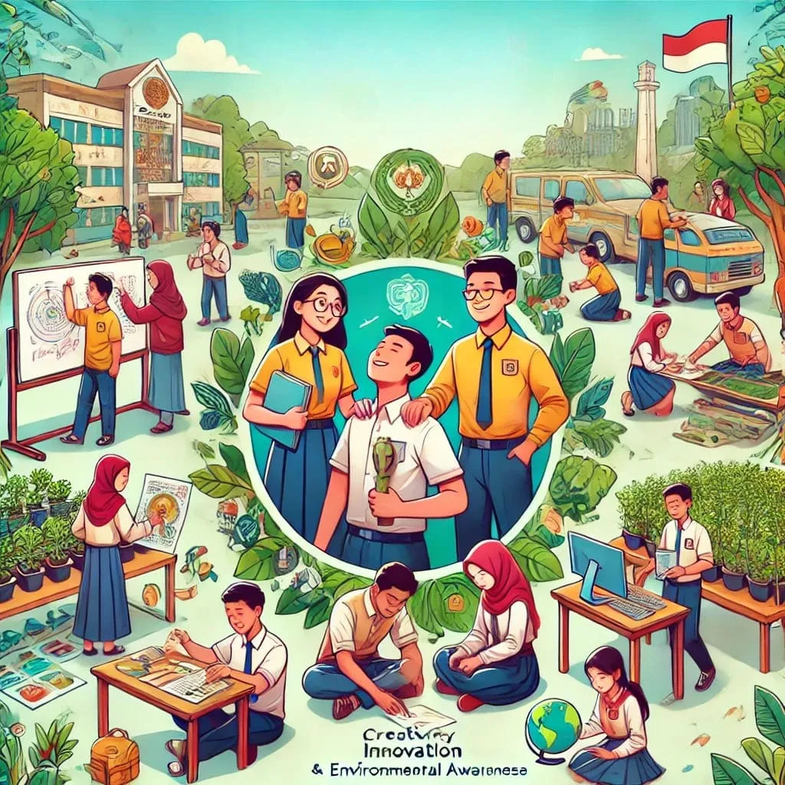

Tujuan Sekolah
Pendidikan di SD Negeri 288 Liang-Liang sesuai dengan visi; “Terwujudnya peserta didik yang berakhlak mulia,
kreatif, inovatif dan berwawasan lingkungan berdasarkan profil pelajar Pancasila”.
Tujuan SD Negeri 288 Liang-Liang
Atas dasar dasar tersebut rumusan tujuan sekolah secara lebih spesifik, dapat kami uraikan sebagai berikut:
- Sekolah mampu mewujudkan kegiatan dalam bidang keagamaan, kepribadian, dan kepedulian.
- Sekolah mampu menghasilkan prestasi bidang akademik dan non akademik.
- Sekolah mampu menerapkan pembelajaran yang inovatif, ilmu pengetahuan dan teknologi.
- Sekolah mampu menerapkan manajemen partisipatif dengan melibatkan seluruh warga sekolah sehingga menjadi team yang solid.
- Sekolah mampu mengembangkan kegiatan yang membiasakan kedisiplinan diri dan berkarakter.
- Sekolah mampu membiasakan budaya tertib, disiplin, santun dalam ucapan, sopan dalam perilaku terhadap sesama berdasarkan iman dan taqwa.
- Sekolah mampu mewujudkan lingkungan yang bersih, nyaman, rindang dan sehat.

- Tujuan Jangka Pendek:
Tujuan jangka pendek yang ingin diwujudkan di SD Negeri 288 Liang-Liang adalah sebagai berikut:
- Terwujudnya kwalitas keimanan dan ketaqwaan murid terhadap Tuhan Yang MahaEsa.
- Meningkatnya kepribadian murid sesuai dengan adat-istiadat, karakter, dan budaya bangsa Indonesia.
- Meningkatkan perilaku murid dalam menerapkan hidup sehat dan bersih serta peduli lingkungan hidup.
- Tercapainya prestasi akademik dengan pencapaian prestasi belajar sesuai standar kompetensi lulusan.
- Meningkatnya prestasi non akademik dalam bidang agama, kesenian, olahraga, dan kecakapan hidup.
- Presentasi lulusan yang masuk ke SMP Negeri atau sederajat minimal 90%.
- Terwujudnya layanan pendidikan secara adil kepada masyarakat tanpa membedakan latar belakang sosial, ekonomi, suku bangsa, dan agama.
- Terlaksananya kegiatan yang mendekatkan seluruh warga sekolah pada kegiatan yang berwawasan lingkungan.
- Melengkapi sarana-prasarana sekolah berupa sarana TIK.
- Tujuan Jangka Menengah:
- Melaksanakan pembelajaran berdasarkan kurikulum sekolah.
- Dapat mengamalkan ajaran agama dari hasil proses pembelajaran dan kegiatan pembiasaan.
- Dapat Meraih prestasi akademik maupun non akademik minimal pada tingkat kabupaten Bulukumba.
- Menguasai dasar-dasar IPTEK sebagai bekal untuk melanjutkan ke sekolah yang lebih tinggi dan terjun ke masyarakat.
- Disiplin dan berbudipekerti yang luhur.
- Murid yang memiliki rasa cinta tanah air dan bangsa dengan memegang teguh Pancasila dan undang-undang dasar 1945.
- Murid yang mampu menerapkan cara hidup sehat dan melestarikan lingkungan hidup.
- Menjadikan sekolah sebagai pelopor dan penggerak di lingkungan masyarakat sekitar.
- Tujuan Jangka Panjang:
- Melengkapi sarana/prasarana sekolah secara bertahap untuk memenuhi SPM menuju ke SNP.
- Menyediakan sarana TIK sebagi penunjang Proses Pembelajaran.
- Menambah koleksi buku perpustakaan sebagai sumber belajar.
- Melaksanakan kegiatan dan program yang kreatif dan inovatis dan bermanfaat bagi murid.
- Pendidik dan tenaga kependidikan selalu meningkatkan profesionalisme guna memberikan pengalaman baik kepada murid.